🏆 Competition season almost complete — 2 Teams are Champions!
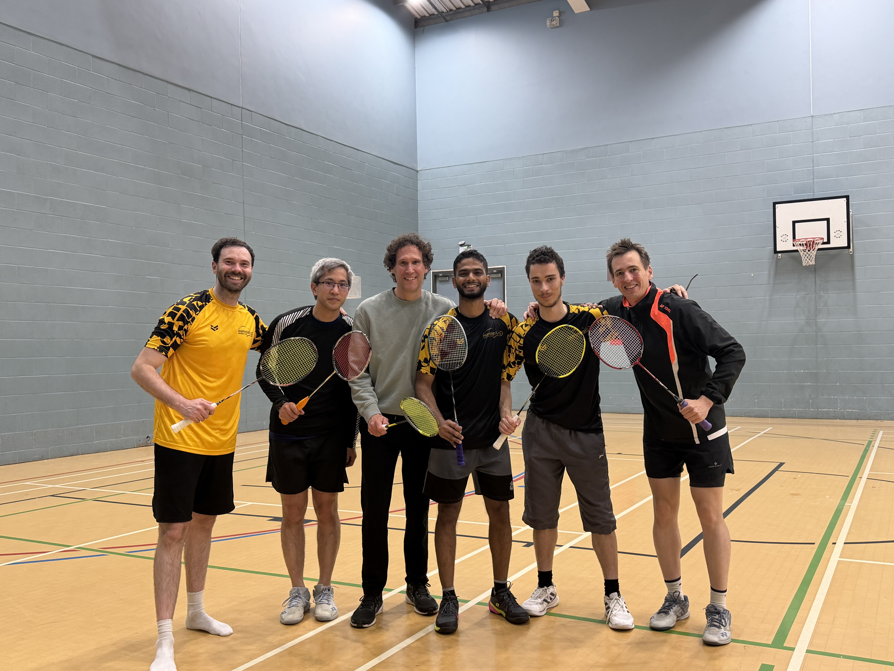
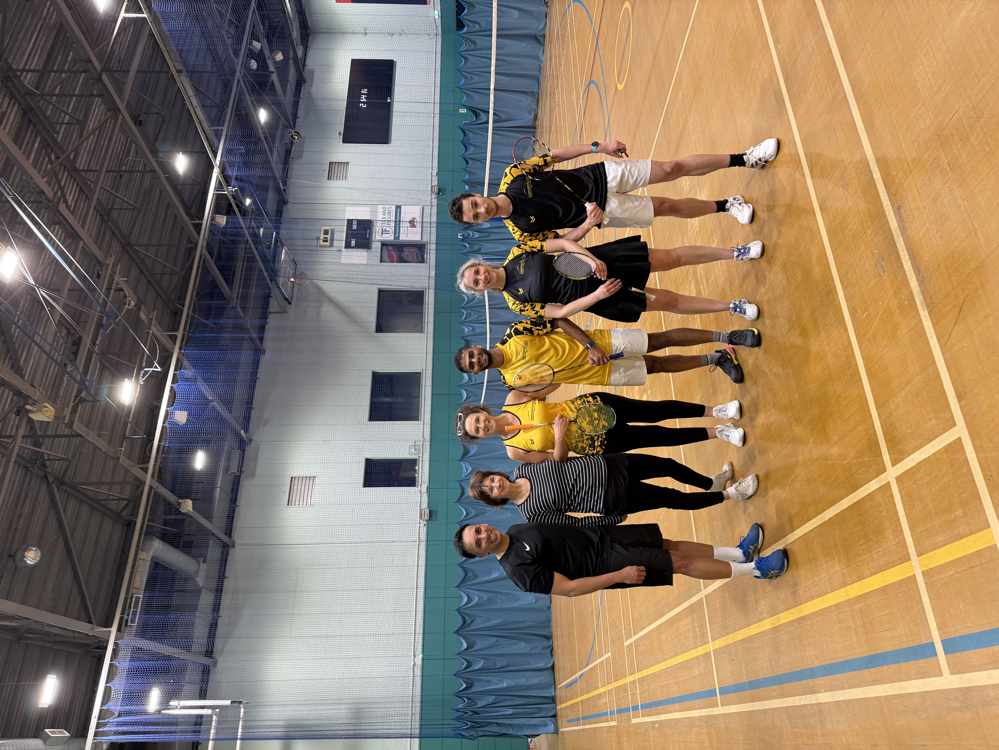
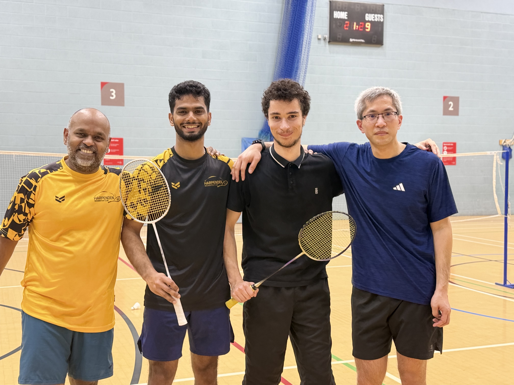
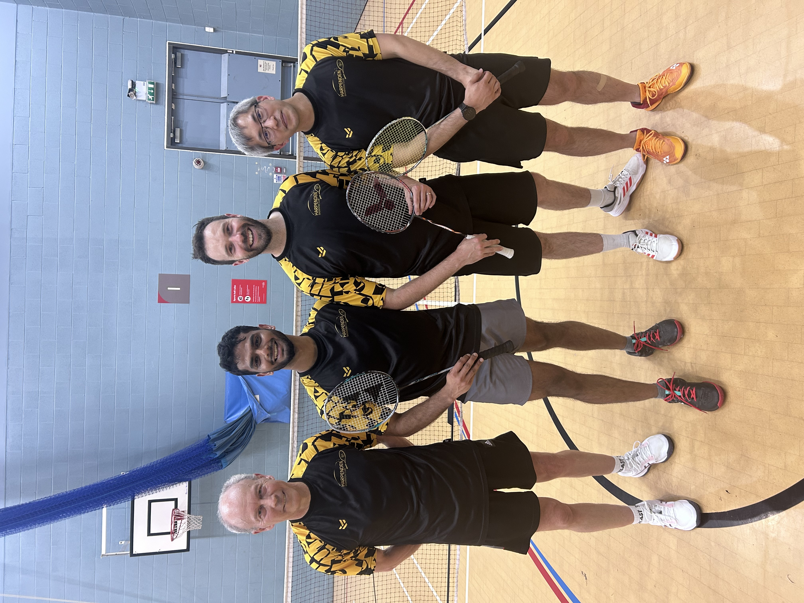
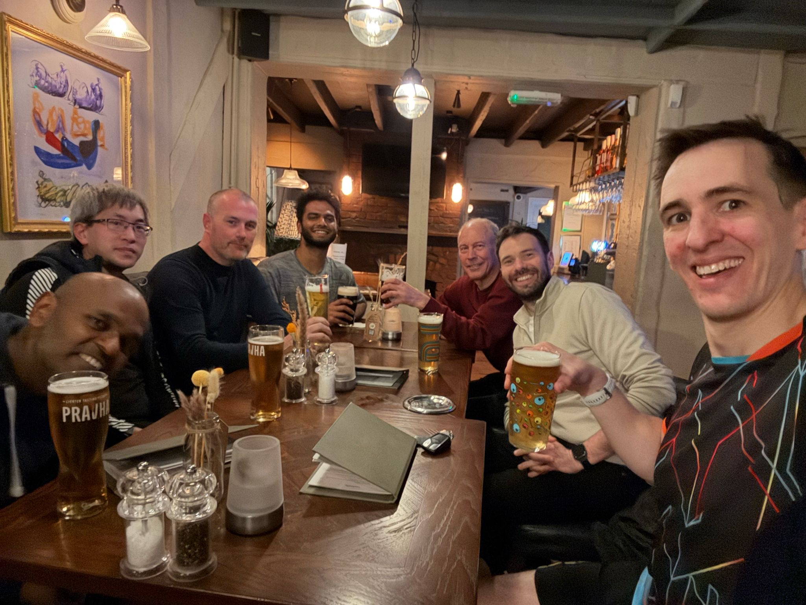
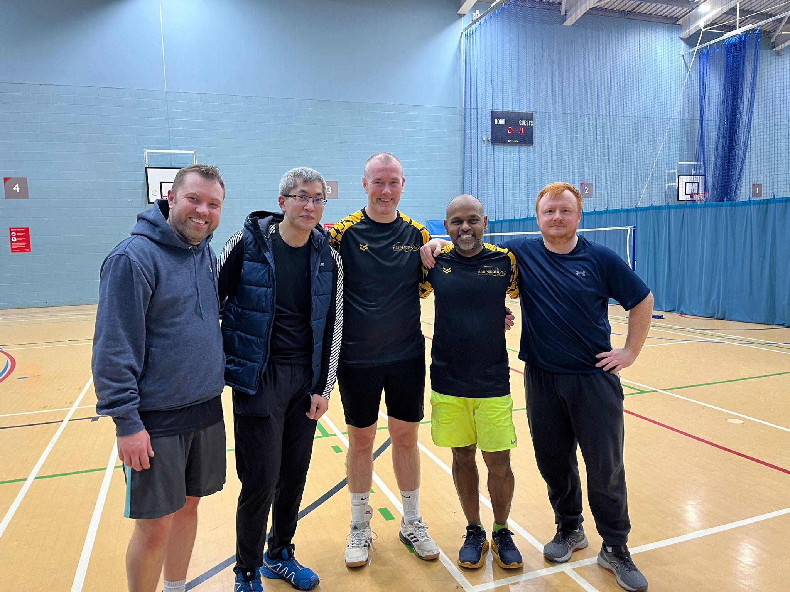
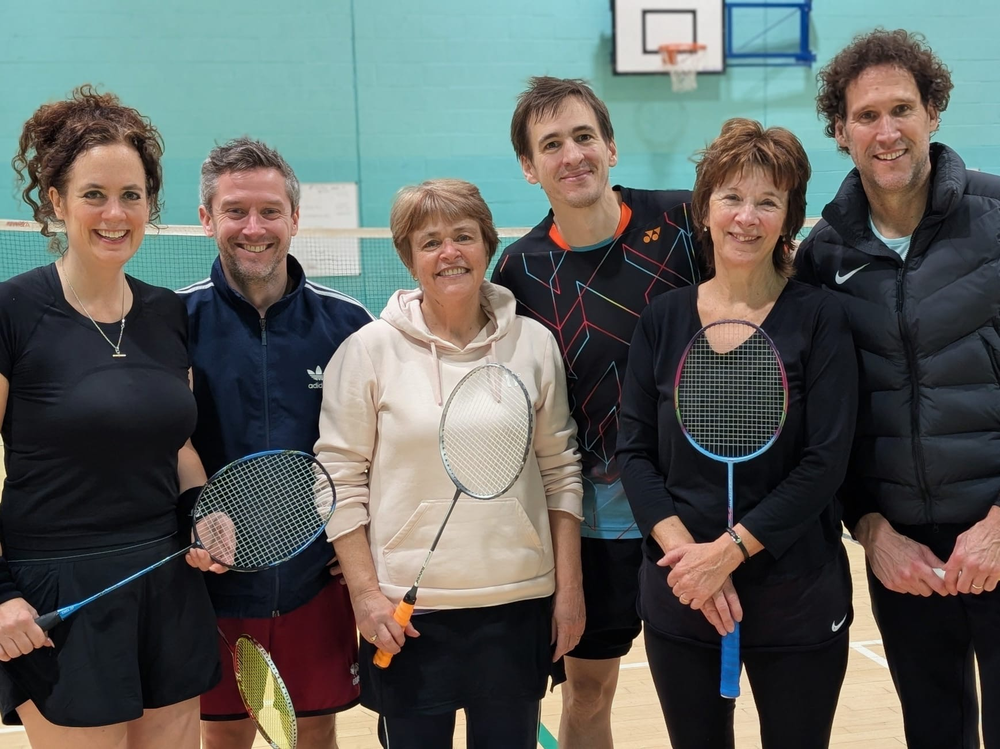
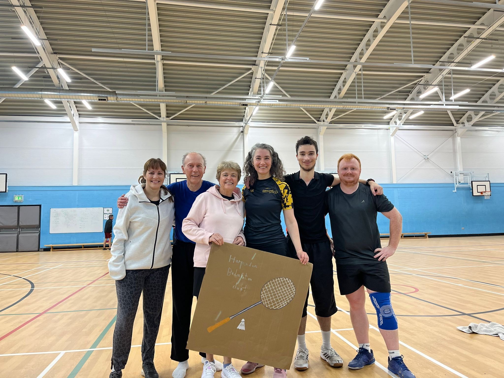
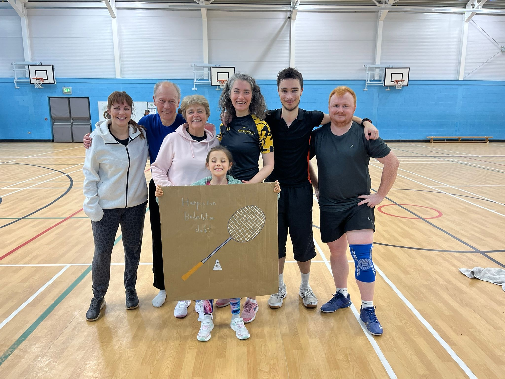
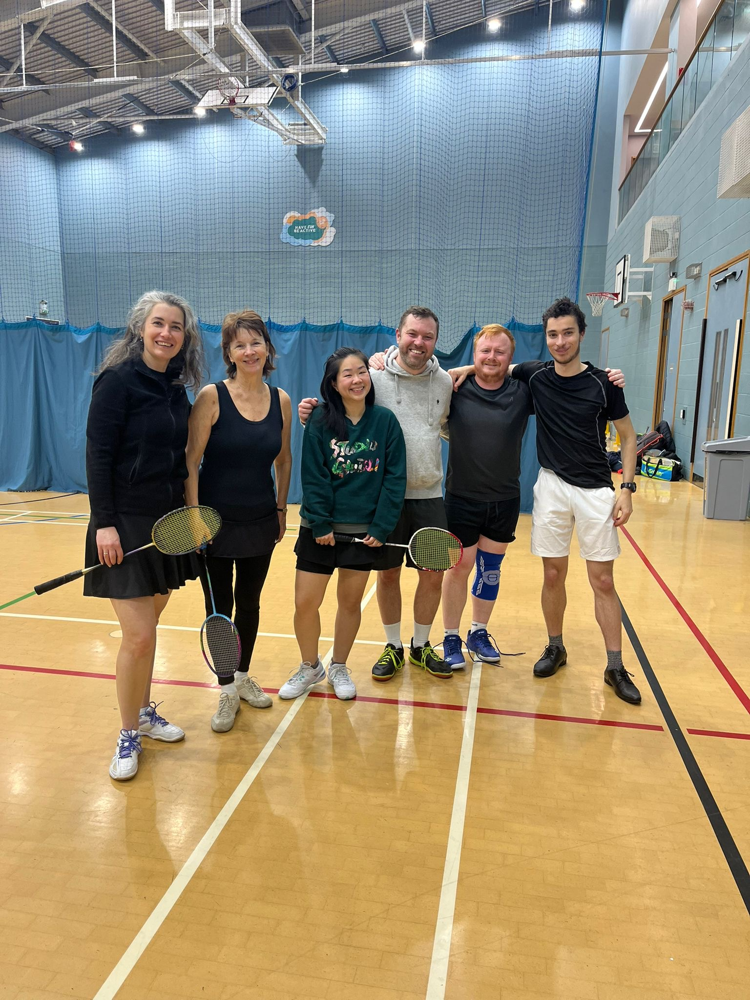
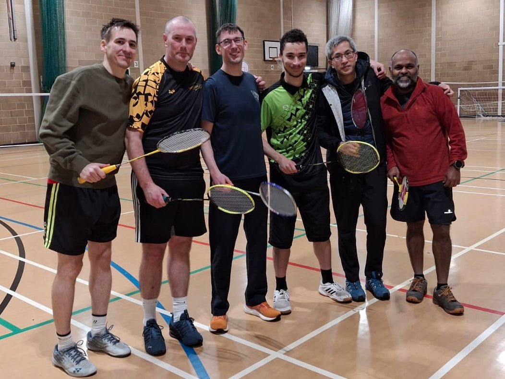
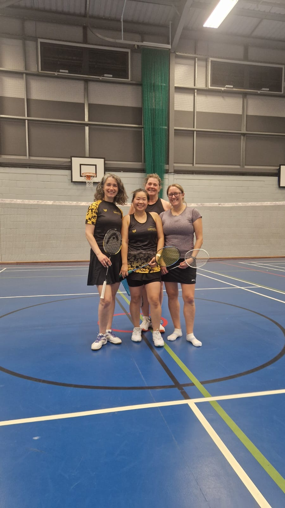
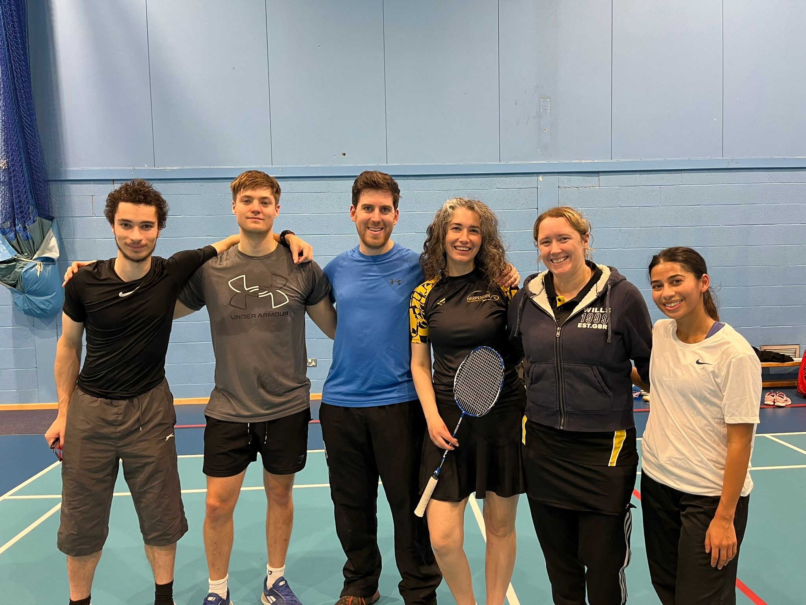
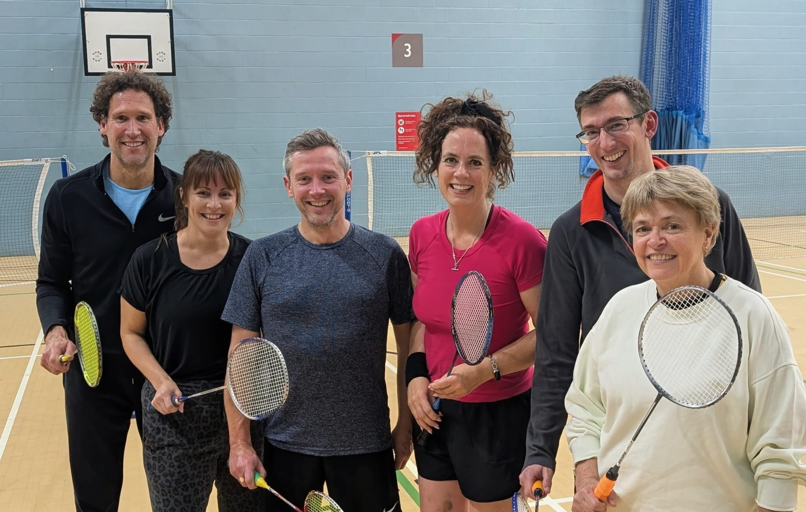
Hertfordshire County League — Division 3 | Captain: Simon Casey
| Date | Opposition | Start | Venue | Result |
|---|---|---|---|---|
| Sun 5 Oct 25 | Smashers | 19:00 | Mount Grace School, 46 Mount Grace Rd, Potters Bar EN6 1RB | Won 7–2 |
| Thur 9 Oct 25 | Epping | 19:30 | Home | Won 8–1 |
| Thur 27 Nov 25 | Bishops Stortford | 19:30 | Home | Won 8–1 |
| Thur 15 Jan 26 | Smashers | 19:30 | Home | Won 9–0 |
| Sun 15 Feb 26 | Ware 2 | 10:00 | Wodson Park Sports Centre, Wadesmill Rd, Ware SG12 0UQ | Won 6–3 |
| Wed 25 Mar 26 | Bishops Stortford | 20:00 | Avanti Grange School, Newland Ave, Bishops Stortford CM23 2BD | Won 5–4 |
| Wed 15 Apr 26 | Epping | 19:00 | Epping Sports Centre, Hemnall St, Epping CM16 4LU | Won 6–3 |
| Thur 30 Apr 26 * | Ware 2 | 19:30 | Home | Won 7–2 |
* New date
SW Herts League — Division 1 | Captain: Donal Kelly
| Date | Opposition | Start | Venue | Result |
|---|---|---|---|---|
| Thur 23 Oct 25 | Dunstable | 19:30 | Home | Lost 1–8 |
| Thur 4 Dec 25 | Hadley | 20:00 | The Drill Hall, 1 Old Park Avenue, Enfield EN2 6PJ | Lost 1–8 |
| Fri 9 Jan 26 | Vauxhall | 20:00 | Venue 360, 20 Gipsy Lane, Luton LU1 3JH | Won 7–2 |
| Tue 20 Jan 26 * | Gadebridge | 20:00 | Queen Elizabeth School, Crawley Green Road, Luton LU2 9AG (changed venue) | Won 7–2 |
| Thur 19 Feb 26 | Gadebridge | 19:30 | Home | Won 5–4 |
| Thur 19 Mar 26 | Hadley | 19:30 | Home | Won 8–1 |
| Sun 12 Apr 26 | Dunstable | 19:00 | Dunstable Centre, Court Drive, Dunstable LU5 4JD | Lost 2–7 |
| Thur 23 Apr 26 | Vauxhall | 19:30 | Home | Lost 4–5 |
* New date
SW Herts League — Division 1 | Captain: Amanda Evans
| Date | Opposition | Start | Venue | Result |
|---|---|---|---|---|
| Sun 21 Sep 25 | Smashers | 19:00 | Mount Grace School, 46 Mount Grace Rd, Potters Bar EN6 1RB | Won 5–1 |
| Wed 21 Jan 26 | Harpenden Racqueteers | 20:00 | Harpenden Leisure Centre, Amenbury Lane, Harpenden AL5 2HU | Won 4–2 |
| Fri 6 Feb 26 | Abbey | 19:45 | Haberdashers' Boys School, Butterfly Lane, Elstree WD6 3AF | Won 6–0 |
| Sat 28 Feb 26 | Smashers | 11:00 | Rickmansworth School, Scots Hill, Croxley Green WD3 3AQ | Drew 3–3 |
| Sat 14 Mar 26 | Harpenden Racqueteers | 10:00 | Rickmansworth School, Scots Hill, Croxley Green WD3 3AQ | Won 6–0 |
| Sat 18 Apr 26 | Abbey | 11:00 | Rickmansworth School, Scots Hill, Croxley Green WD3 3AQ | Won 4–2 |
Hertfordshire County League — Division 2 | Captain: Jane Davey
| Date | Opposition | Start | Venue | Result |
|---|---|---|---|---|
| Thur 30 Oct 25 | Hadley | 19:30 | Home | Won 6–3 |
| Thur 6 Nov 25 | Hertford | 19:30 | Home | Won 7–2 |
| Thur 20 Nov 25 | Ware 3 | 19:30 | Home | Won 6–3 |
| Sun 30 Nov 25 | Masters 3 | 19:00 | Hitchin Boys School Sports Centre, Grammar School Walk, Hitchin SG5 1JB | Won 5–4 |
| Thur 29 Jan 26 | Hadley | 20:00 | The Drill Hall, 1 Old Park Avenue, Enfield EN2 6PJ | Lost 2–7 |
| Sun 22 Feb 26 | Hertford | 19:30 | Ware Drill Hall, 17 Amwell End, Ware SG12 9HP | Won 8–1 |
| Thur 26 Feb 26 * | Masters 3 | 19:30 | Home | Won 6–3 |
| Sat 21 Mar 26 * | Bishops Stortford | 12:00 | Rickmansworth School, Scots Hill, Croxley Green WD3 3AQ | Won 7–2 |
| Sun 29 Mar 26 | Ware 3 | 10:00 | Wodson Park Sports Centre, Wadesmill Rd, Ware SG12 0UQ | Lost 4–5 |
| Wed 1 Apr 26 * | Bishops Stortford | 20:00 | Avanti Grange School, Newland Ave, Bishops Stortford CM23 2BD | Won 7–2 |
* New date
SW Herts League — Division 1 | Captain: Veronica Goian
| Date | Opposition | Start | Venue | Result |
|---|---|---|---|---|
| Fri 7 Nov 25 | Abbey | 19:45 | Haberdashers' Girls School, Aldenham Road, Elstree WD6 3BT | Won 7–2 |
| Sat 15 Nov 25 | Harpenden Racqueteers | 11:00 | Rickmansworth School, Scots Hill, Croxley Green WD3 3AQ | Lost 4–5 |
| Fri 12 Dec 25 | Vauxhall | 20:00 | Venue 360, 20 Gipsy Lane, Luton LU1 3JH | Lost 0–9 |
| Thur 12 Feb 26 | Gadebridge | 19:30 | Home | Won 5–4 |
| Wed 25 Feb 26 | Harpenden Racqueteers | 19:45 | Harpenden Leisure Centre, Amenbury Lane, Harpenden AL5 2HU | Lost 0–9 |
| Thur 5 Mar 26 | Abbey | 19:30 | Home | Won 8–1 |
| Thur 9 Apr 26 | Vauxhall | 19:30 | Home | Lost 2–7 |
| Tue 21 Apr 26 * | Gadebridge | 20:00 | The Astley Cooper School, St Agnells Lane, Hemel Hempstead HP2 7HL | Lost 4–5 |
* New date
SW Herts League — Division 1 | Captain: Goutham Ramasamy
| Date | Opposition | Start | Venue | Result |
|---|---|---|---|---|
| Thur 2 Oct 25 | Kites B | 19:30 | Home | Lost 2–4 |
| Thur 16 Oct 25 | Vauxhall | 19:30 | Home | Lost 1–5 |
| Wed 12 Nov 25 | Harpenden Racqueteers | 20:00 | Harpenden Leisure Centre, Amenbury Lane, Harpenden AL5 2HU | Drew 3–3 |
| Sun 16 Nov 25 | Smashers | 19:00 | Mount Grace School, 46 Mount Grace Rd, Potters Bar EN6 1RB | Lost 1–5 |
| Thur 11 Dec 25 | Hawks | 19:30 | Home | Drew 3–3 |
| Sun 11 Jan 26 | Kites A | 15:00 | Gosling Sports Park, Stanborough Rd, Welwyn Garden City AL8 6XE | Lost 0–6 |
| Mon 2 Feb 26 | Kites B | 20:00 | Gosling Sports Park, Stanborough Rd, Welwyn Garden City AL8 6XE | Lost 1–5 |
| Fri 6 Feb 26 | Abbey | 19:45 | Haberdashers' Boys School, Butterfly Lane, Elstree WD6 3AF | Lost 0–6 |
| Sat 28 Feb 26 | Smashers | 11:00 | Rickmansworth School, Scots Hill, Croxley Green WD3 3AQ | Lost 2–4 |
| Sat 14 Mar 26 | Harpenden Racqueteers | 10:00 | Rickmansworth School, Scots Hill, Croxley Green WD3 3AQ | Drew 3–3 |
| Thur 26 Mar 26 | Kites A | 19:30 | Home | Won 5–1 |
| Fri 10 Apr 26 | Vauxhall | 20:00 | Venue 360, 20 Gipsy Lane, Luton LU1 3JH | Drew 3–3 |
| Sat 18 Apr 26 | Abbey | 11:00 | Rickmansworth School, Scots Hill, Croxley Green WD3 3AQ | Won 6–0 ** |
| Fri 24 Apr 26 | Hawks | 19:00 | Hertfordshire Sports Village, de Havilland Campus, Hatfield AL10 9EU | Lost 2–4 |
* New date | ** Opponents conceded